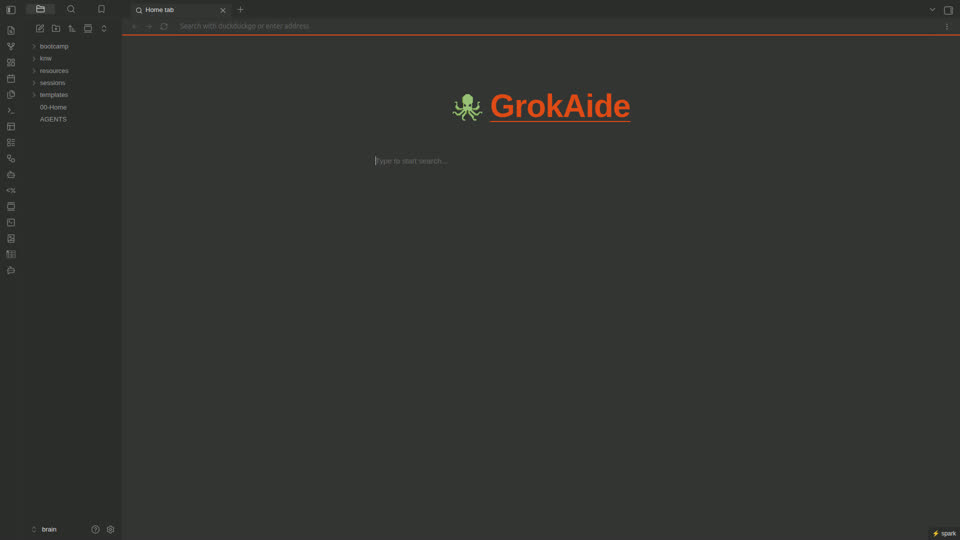

Enter the Lab
Projects
Real lab work, documented for interviews and clients. Patterns only — no secrets, no school-SKU.
P1 · LabNET / SMADP Live
One-liner: Private multi-node edge lab — control plane + workers, mesh access, durable storage, written ops.
- Stack: Ubuntu · k3s triad · Tailscale · NAS · lab gateway
- Skills: Linux ops, networking, DevOps design/debug, documentation
- Talk track: “I operate a real three-node cluster; green means all nodes Ready.”
- Public claim: Anonymized architecture only
control plane — orchestration + k3s control workers — capacity for services NAS — durable tenants mesh — zero-trust remote admin
P2 · AIDE_OS / GrokAide Design → build
One-liner: AI-assisted desktop + VirtualBox lab-in-a-box that mirrors the host seat (notes + terminal + agent policy) for learning and portfolio demos.
- Stack: classic Ubuntu guest · Obsidian/GrokAide · Ghostty · aidectl · hybrid local/xAI (planned)
- Skills: prompt engineering at scale, design docs, PR plans, Linux desktop/server crossover
- Audience: personal learning + portfolio; designed so a basic SuperGrok tier user can follow runbooks without maxing weekly usage by accident
- Not: district school SKU · not HickMedia gaming product

GrokAide / Obsidian home surface used in the education seat.
P3 · Ubuntu Core practice Practice
One-liner: Hands-on Core install/debug on constrained hardware; boot and appliance lessons.
- Borrow: flash milestones, stop-rules, QEMU≠hardware honesty
- Do not: ship RetroArch/ROM defaults as AIDE; HickMedia stays gaming/media product
- Skills: install debugging, immutable OS concepts, postmortems
Splash / mood still (lab asset). MVP portfolio uses static branding; short motion optional later.
P4 · Valley Tech Support Business
Rural IT under Destroy The Kraken: scoped packages, handoff documentation, private cloud on client-owned gear.
P5 · LFCS / Canonical path In progress
Structured Linux Foundation study + bootcamp vault. Complements LabNET as progressive skill proof.
What “documented” means
- Design decisions (goals, non-goals, alternatives, PR plan)
- What I learn (retrospectives, stop-rules, USAGE-LOG)
- How a basic Grok tier user can follow without burning the whole weekly pool on thrash
Full private specs stay in the lab git trees. Public pages stay redacted.